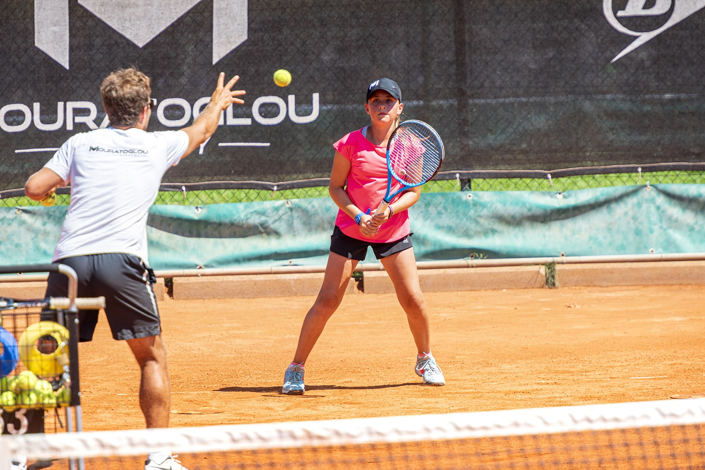
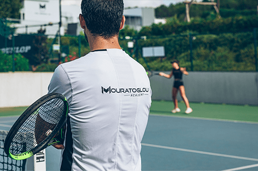

If you're looking to introduce your child to a sport, tennis is a great option for many reasons. It's equally mental as it is physical, therefore promoting both strong psychological and physiological development.
After School Programme
- Classes available Monday to Thursday
- Ages 5 and up
- Cost: €144 members / €159 non members over 8 years old

Tennis is a lifetime sport that the whole family and both men and women can play together. It's a great way to keep fit and meet new people but as you develop as a player you'll learn the true benefits of the game. Tennis teaches mental strength, helps concentration and builds confidence.
- 5 Lesson Courses throughout the year
- Develop Fundamental Tennis Skills
- Groups for Beginners, Improvers and Experienced players